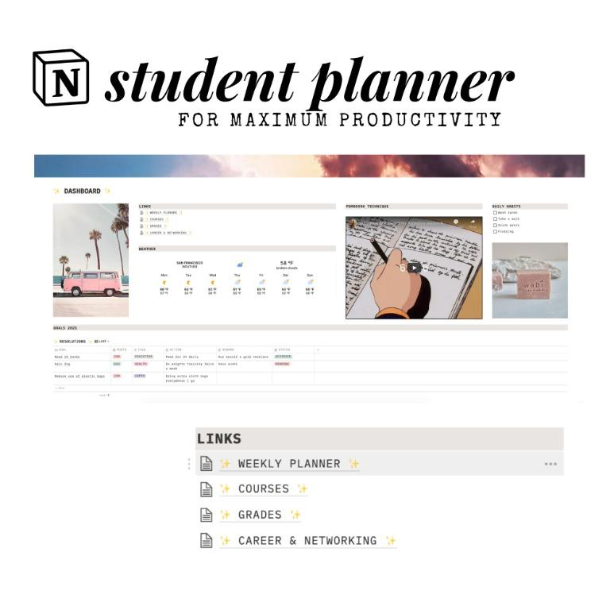
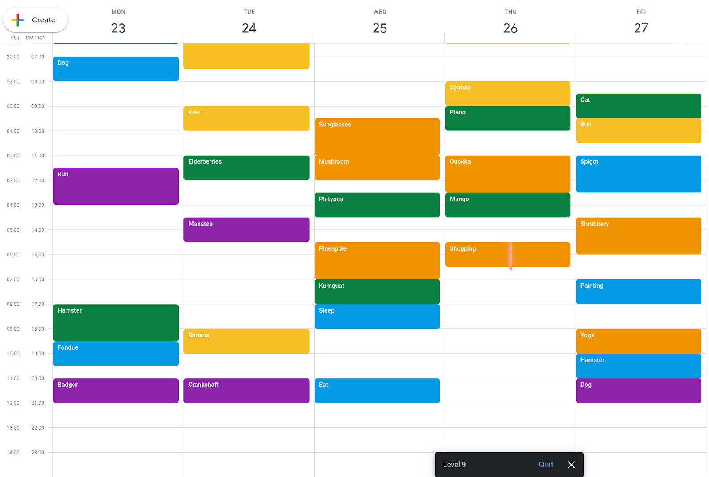
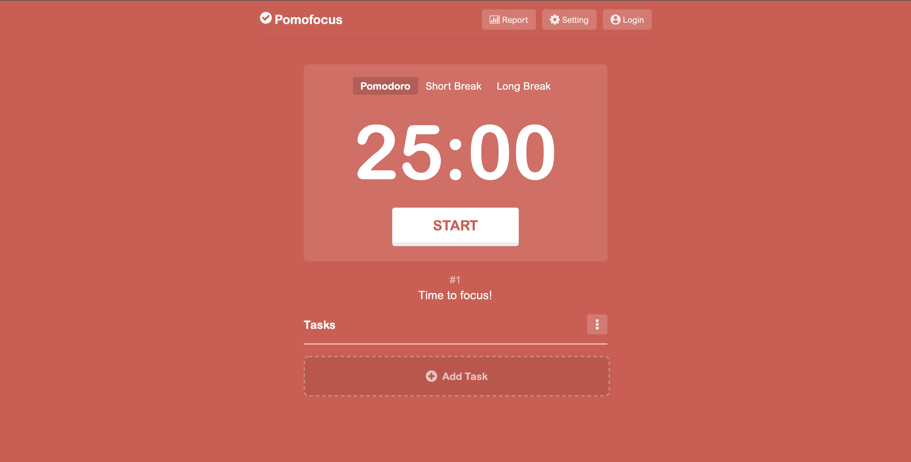

Useful websites for you
I want to share with you some of the website that could help you organize your study and daily life. Most of these websites are free for you to use, and some of that have app version for both OS and Android
1. Notion
Notion websiteDownload Notion on Desktop
Notion is a all-in-one workspace, that you can use to schedule tasks, manages your files, documents, keep agendas, and organize work
2. Google Calendar
Google Calendar websiteIf you want to manage your time, and scheduling for your appointment, meetings, Google Calendar is a
best free tool for you. It could help you keep track of all your schedule and work more efficietcy
How to use Google Calendar to create an event
3. Pomofocus
Pomofocus websiteThere is a cool study technique call Pomodoro, which can help you break your task into smaller section
This website is a countdown clock to help you stay focus on your task in 25 minutes.
All you need to to is type your task end start the clock, after 25 minutes, it will have 5-minute break countdown for you
